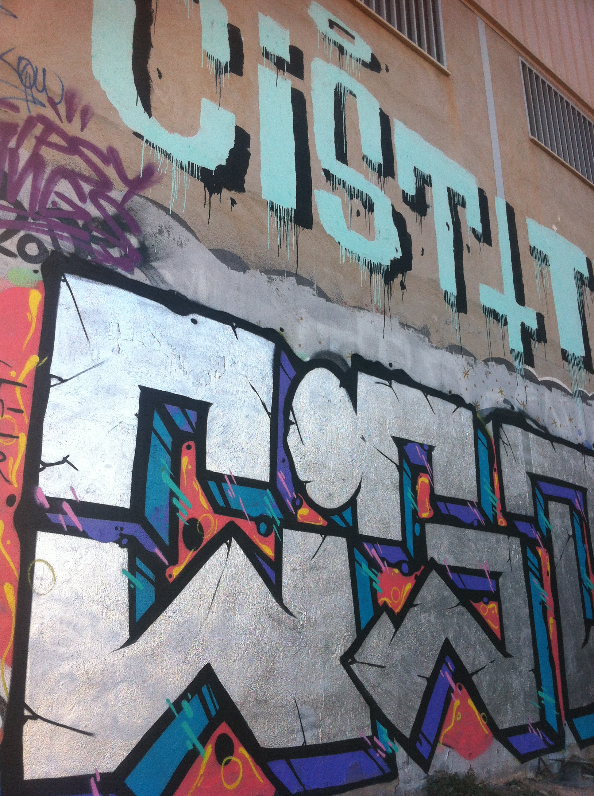

All started with simple "tags" in the Bronx, later it became popular and lost of teenagers started the movement. Painting trains and things like that, lately with subway trains being increasingly inaccessible, the Clean Train Movement started in 1989. Because of this, many graffiti artists had to resort to new ways to express themselves. Roof tops became the new billboards for some 80s-era writers
Fernando Carlo was a child of the Bronx who was sick of poverty, and fell to the temptation of quick drug money. Then he started the graffiti movement on trains and the hood walls
Later on he started taking seriously the graffiti game going out all nights to the subway and shit like that, getting respect from all NewYork graffers.
Actually he is one of the most famous graffiti artists since the start of the game , he is keeping it up on graffiti galleries and street art events but no more illegal stuff.
He was part of the game like all of us but two cops kille dhim in a subway mission, tahts why he is getting a lot of tributes from all graffiti writers until from haters.
Some new teenagers are grewing up on this culture and will be part of the game pretty soon lets see some pieces of them
That are some contemporany writers, obviously not legends as most of 80s writers but still in game fresh as never